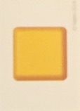
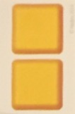
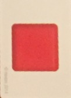
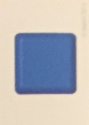
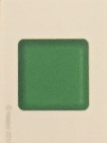

Be the first person to knock down your gingerbread man without moving anyone else’s!
1. Remove all cards with orange or purple color blocks.
2. Shuffle remaining cards and place them facedown in a pile.
3. Unfold gameboard such that the blue side is facing up. Lay flat on a tabletop such that the edge of the board (4-5 inches) is hanging off of the tabletop.
4. Place each of the the gingerbread men on the hanging edge of the gameboard, all in one line, approximately 1 inch apart.
If you knock down someone else’s gingerbread man, you are automatically out, even if you also knocked down your own. The other person’s game piece is restored.
Be the first person to knock down your gingerbread man without knocking down anyone else's!
The youngest player goes first.
On each turn, the player draws one card from the pile. The player then has the opportunity to knock down their game piece according to what their card allows:
Single Color Card: the player has a single attempt to knock down their gingerbread man this turn.
Double Color Card: the player has two attempts to knock down their gingerbread man this turn.
Red: the player may attempt to knock down their gingerbread man by blowing on it for one second (at a distance of at least 4 inches away).
Blue: the player may attempt to knock down their gingerbread man by using the card as a small frisbee, throwing it from a distance of at least 2 feet away.
Green: the player may attempt to knock down their gingerbread man by using only their nose, but if any other part of their face or body touches the game piece, the attempt is void.
Yellow: the player may attempt to knock down their gingerbread man by using only the pinky of their non-dominant hand.
Ice Cream, Mint, Lollipop, or Peanut: the player may attempt to knock down their gingerbread man using any one of the four methods listed.